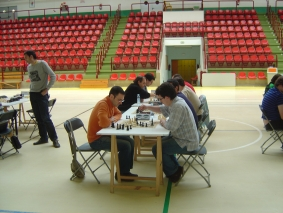
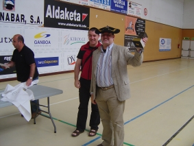

Club de Ajedrez Agustín de Leiza |
| » inicio » socios del club » cto. por equipos » últimos torneos » enlaces |
Pinchetas en Zarauz07-06-09Este año nos invitaron de nuevo a comer a Zarauz, perdón a jugar un campeonato de pinchetas en Zarauz. El campeonato ha estado bien organizado y ha constado de 11 equipos (sobre todo debido a la baja de última hora de algún equipo invitado) con dos equipos de Zarauz y sobre todo con categoría en los equipos destinados a estar por arriba, sobre todo por la presencia de Batalla casi con su cuarteto titular, solo faltaba Cruz-López. Aparte de éste equipo también destacaban el equipo titular de Zarauz, Fomento con Agirretxe a la cabeza, el equipo de Abadiño que también trajo al equipo titular y por supuesto nosotros, que no aspirábamos a luchar por el primer puesto pero sí a dar guerra, aunque suponíamos que la falta de práctica en esta modalidad iba a pasar factura.  El vencedor del torneo fue Batalla como se suponía pero Zarauz A les hizo sudar hasta la campanada final ya que a falta de la última ronda iban por delante y sólo un empate ante nosotros, y la victoria en su encuentro de Batalla, les privó del primer lugar. En tercera posición quedó Fomento y en cuarto lugar a medio punto nos clasificamos nosotros.
Cosas a destacar del torneo, a parte de la comida, que para no dar envidia a los lectores que no pudieron disfrutarla no la describiremos, unas cosas:
 |